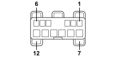

M067D PASSENGER DOOR CONTROL UNIT (NPP) (FRONT PASSENGER DOOR)
- Path
- Electrical equipment > 3 CONNECTORS > M INTERMITTENT AND TIMED ELECTRONIC DEVICES > M067 PASSENGER DOOR CONTROL UNIT (NPP) > M067D PASSENGER DOOR CONTROL UNIT (NPP) (FRONT PASSENGER DOOR)
- Kind
- connector pinout (pin -> wire colour -> other end)
- Applies to
- all engines; all production periods
- Interactive page
- https://sloeber94.github.io/elrnDB-fCrm/en/#/194005297
Applies to: all engines; all production periods

Wiring | Colour |
|---|---|
BIANCO (white) |
Pin | Cable | Destination | |||
|---|---|---|---|---|---|
Sec.. | Colour | Node | Connect. | Pin | |
3 | 1,5 | Z (violet) | K | ||
4 | 1,5 | S (pink) | H | ||
6 | 1,5 | M (brown) | J | ||
7 | 2,5 | N (black) | 9 | ||
8 | 2,5 | SN (pink with black stripe) | 4 | ||
9 | 2,5 | AN (light blue with black stripe) | 3 | ||
10 | 2,5 | MB (brown with white stripe) | 4 | ||
11 | 1,5 | BR (white with red stripe) | 1 | ||
Topics linked from this page (4)
- 31 FRONT PASSENGER DOOR
- D031 PASSENGER FRONT DOOR COUPLING
- N051 RIGHT FRONT DOOR LOCK GEARED MOTOR
- N061 RIGHT FRONT ELECTRIC WINDOW MOTOR